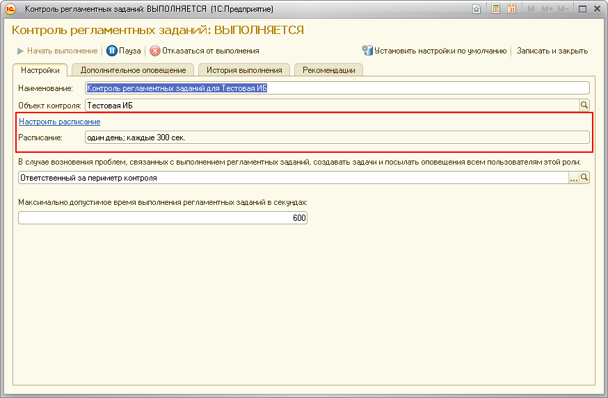

Контроль выполнения регламентных заданий
Данное сообщение означает, что в информационной базе не обнаружены выполняющиеся регламентные задания.
- Возможно, период выполнения контрольной процедуры выбран слишком малым, и за пириод, прошедший с последнего запуска, новых запусков, контрольных процедур не происходило.

- Возможно, причина в том, что регламентные задания были по какой-то причине отключены администратором кластера, на котором развёрнута информационная база, или в период, когда была обнаружена проблема, не было запланировано выполнение ни одного регламетного задания. Рекомендуется связаться с администратором кластера информационной базы и прояснить ситуацию.
- Возможно, в исследуемой базе не используется подсистема "Очередь заданий" из "1С:Библиотека стандартных подсистем 8.2" (БСП), имеющего версию 2.1.2.20 или более позднюю.